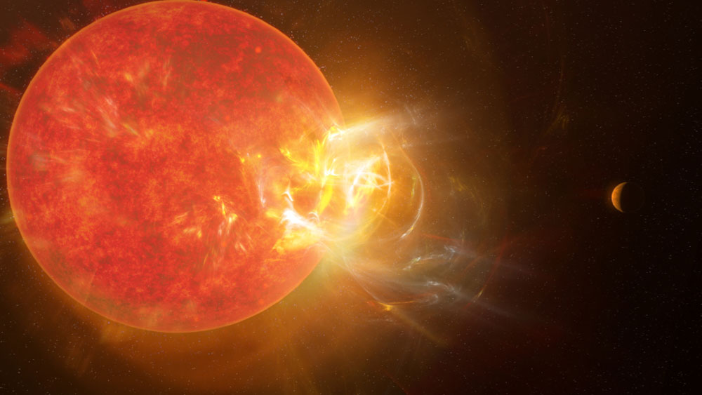

Proxima Centauri, the closest known star to the Sun, hosts exoplanets that offer a glimpse into the possibilities of life beyond Earth. Located just 4.24 light-years away, this red dwarf star is part of the Alpha Centauri system.It is a small, low-mass star, too faint to be seen with the naked eye, with an apparent magnitude of 11.13.
A potentially habitable Earth-sized planet located within the star's habitable zone. It has an orbital period of about 11 days.
A super-Earth with a much longer orbital period (~5 years), believed to be covered in ice, orbiting farther from Proxima Centauri.